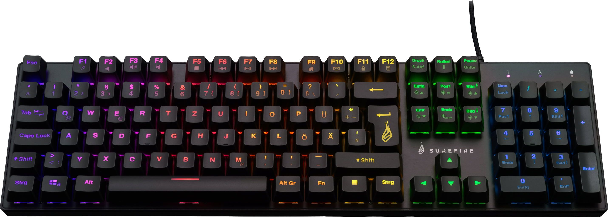

Teclado Mecânico RGB
O teclado mecânico RGB é uma escolha popular para jogadores e profissionais que procuram uma experiência de digitação mais precisa e confortável. O sistema de retroiluminação RGB personalizável permite-lhe criar um ambiente envolvente, enquanto os interruptores mecânicos garantem durabilidade e resposta rápida.
Características
- Interruptores mecânicos para uma digitação mais rápida e precisa.
- Luz de fundo RGB com 16,8 milhões de cores.
- Design ergonómico e construção duradoura.
- Teclas programáveis e configuráveis por macro.
- Ligação USB com tempo de resposta rápido.

Porquê escolher um teclado mecânico?
Os teclados mecânicos são muito populares entre os jogadores e escritores devido à sua durabilidade e capacidade de resposta. Cada tecla tem o seu próprio interrutor, proporcionando uma experiência de escrita mais tátil e precisa.